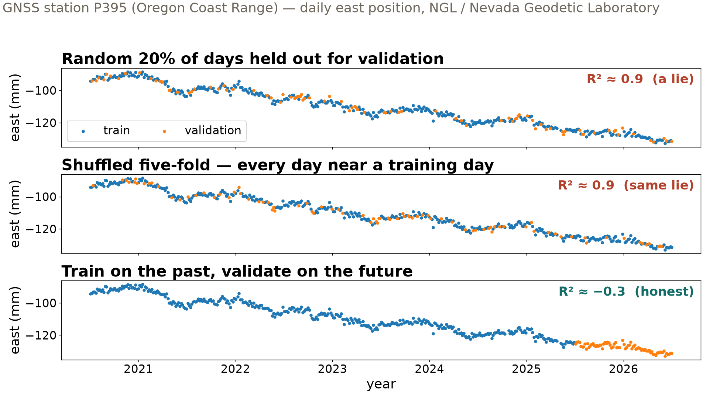
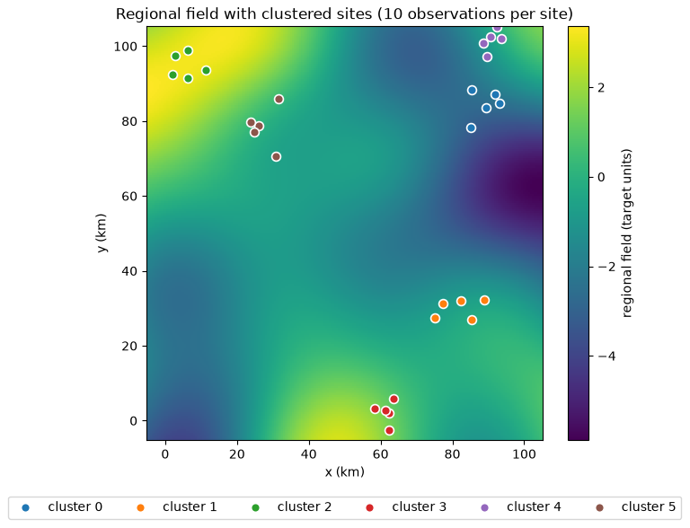

Session 18 · Mon Nov 9 · Book section 3.8
🗺️
Every score is an answer to a question.
Which question is your train / validation / test design asking?
Reading: 3.8 Robust training
📖 The playbook: how to validate models when data share time, space, or group structure.
Roberts, D. R., et al. (2017). Cross-validation strategies for data with temporal, spatial, hierarchical, or phylogenetic structure. Ecography, 40, 913–929.
✗ Random validation inflated the skill of pan-tropical biomass maps — held-out regions exposed it.
Ploton, P., et al. (2020). Spatial validation reveals poor predictive performance of large-scale ecological mapping models. Nature Communications, 11, 4540.
✗ A celebrated deep aftershock model, matched by a single neuron — baselines recalibrated the claim.
DeVries, P. M. R., et al. (2018). Deep learning of aftershock patterns following large earthquakes. Nature, 560, 632–634. — Mignan, A. & Broccardo, M. (2019). One neuron versus deep learning in aftershock prediction. Nature, 574, E1–E3.
✓ Doing it right: estimate where on the map your model actually applies — and say so.
Meyer, H. & Pebesma, E. (2021). Predicting into unknown space? Estimating the area of applicability of spatial prediction models. Methods in Ecology and Evolution, 12, 1620–1633.
The field is actively writing this story — new papers land monthly. These four anchor today’s ideas.
R² = 0.90 validation days shuffled into training years
R² = −0.3 validation days in the future
R² measures skill against predicting the mean: 1 = perfect, 0 = no better than the mean, negative = worse than the mean.
Same random forest, same GNSS data. Only the train/validation design changed.

Real ground motion: tectonic drift + seasonal hydrologic loading. Shuffled designs hand the model the neighbors of every validation day — only the last panel ever predicts the future.
Leakage is not cheating — it is a data design that ignores correlation.
Persistence: predict that tomorrow equals today.
1.7 mm persistence — mean absolute error
16 mm tuned random forest, honest future validation
R² said “worse than the mean”; MAE says by how much, in millimeters. Same validation days, same metric, both models.
Report a physical-units error (MAE) next to any skill score. Baselines before models.

Measurement locations cluster; the field varies smoothly over ~25 km. Random designs let the model interpolate the map instead of predicting new ground.
| Held out from training | R² | The question it answers |
|---|---|---|
| Random samples | 0.72 | Conditions like my training data? |
| Whole locations | 0.36 | A new location near my network? |
| Whole regions | −0.84 | A new region entirely? |
Grouped validation: all samples that share one label — a location, an event, a well — stay on the same side of the train/validation line.
None of these numbers is wrong. They answer different questions — match the design to your deployment.
Fix: stratified grouped validation — keep each location’s samples together and spread the rare positives across folds.
The norm in geotechnical engineering, hydrology, and geology — not an edge case.
| Shared structure | Why samples are correlated | Validation principle |
|---|---|---|
| Time | consecutive samples share weather, season, drift | train on the past, validate on the future |
| Location | repeated measurements at one location are near-duplicates | grouped validation by location |
| Event | one physical event (an earthquake, a storm) reaches many instruments | grouped validation by event |
| Region | nearby locations lie on the same smooth field | leave a region out, with a buffer |
This is Chapter 2.13’s data audit applied at validation time: find the correlation, then keep it on one side of the train/validation line.
pixi run jupyter lab → 3.8_robust_training.ipynbFriday: the same discipline applied to AI agents (6.3) · HW-CML due Fri Nov 20
ESS 469/569 · Machine Learning in the Geosciences · Autumn 2026